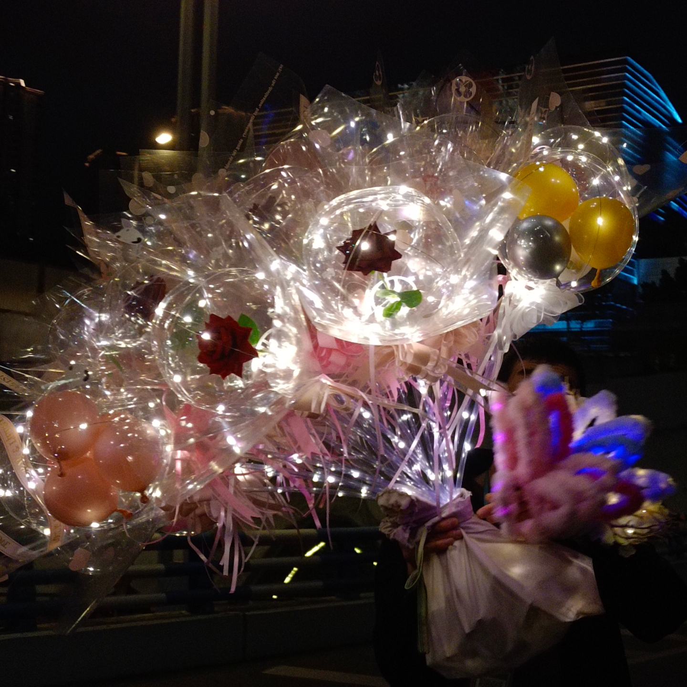
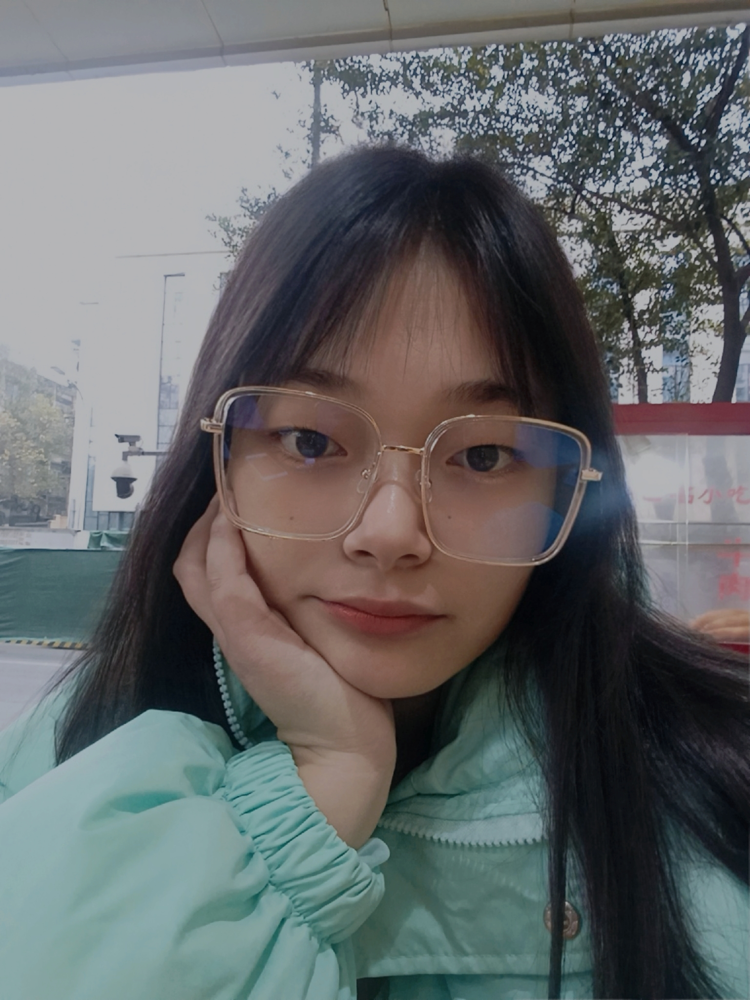
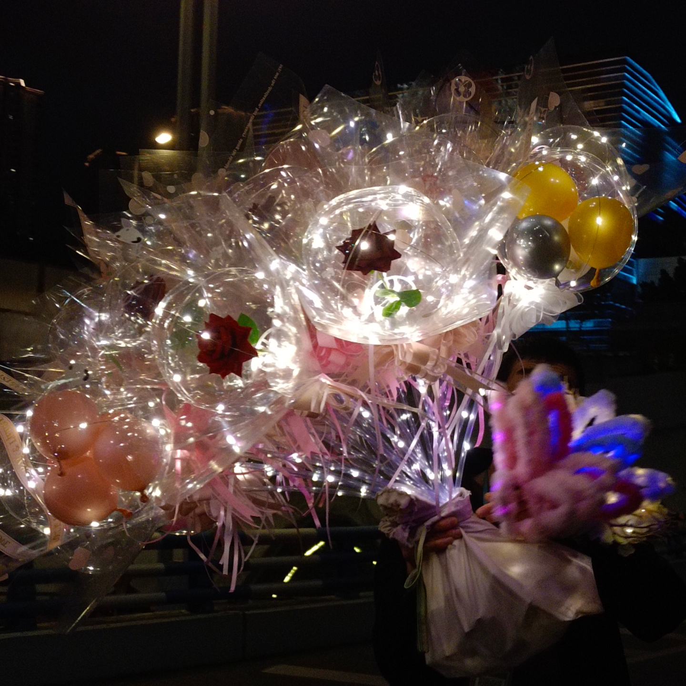
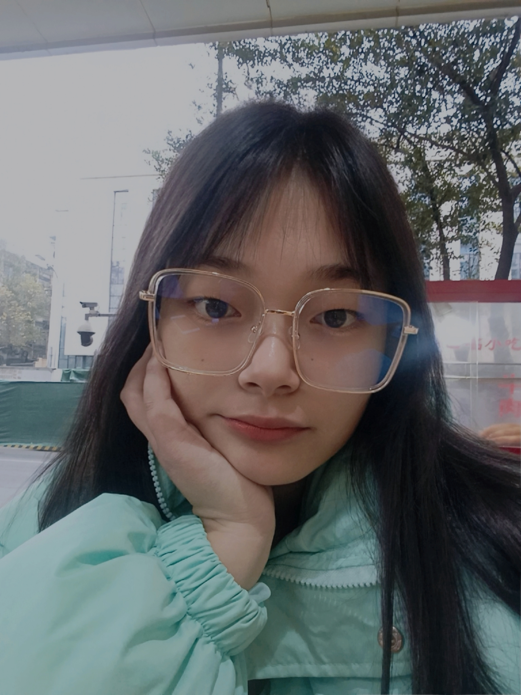

基本信息
学号：21104011020
生日：2001.11.17
电话：17713813125
邮箱：2764035122@qq.com
毕业院校：四川航天职业技术学院
获得荣誉： 2021年09⽉：获得全国计算机⼆级证书
2021年11⽉：获得三好学⽣荣誉证书
2021年12⽉：获得先进⻘年荣誉证书
2021年12⽉：荣获国家励志奖学⾦证书
2021年12⽉：获得计算机⾼新证书
2022年12⽉：获得信息安全管理员资格证
自我简介
我的性格比较随和，兴趣爱好比较广泛，对于事物的接受能力较强，喜欢唱歌、打羽毛球，空余时间会看综艺节目和当下热播的电视剧，学习上会严格要求自己，刻苦钻研，态度端正，明确自己的目标，一个人可以走很快，但一群人一定会走得更远。我深知团队的重要性，可以与班级得同学团结相处。生活上，养成良好的生活习惯，为人友善，乐于助人，对事物充满热情，拥有自己的处事原则，能与同学和睦相处。
我的相册
 



我的偶像

你好啊！千玺，一晃眼已经2023年了，没想到吧，成为公众人物的第十年，你还是那么不习惯站在人群中央做那个众人视线的焦点，你一定想不到之后的爬坡路会比你想象中的来得更崎岖、更精彩、也更过瘾。我也还是会保持那个偶尔回头看一看的习惯，因为我怕埋头探路的过程里一个不留神，就被磨蚀成一个精致而速巧的模子，但好在我们还是一样敏感，一样容易害羞，一样充满激情，一样拥有向内生长的生命力，也同样，还有这么多陪我们一起经历的人，是幸福也是幸运，那么，借着这次难得的见面，再一次和自己做个约定吧，未来的我会是什么样子呢？还会为了热爱的事情付出全力和耐心吗，有认真回应每一份爱吗，会继续拥有坚定的内核吗，最重要的是一个善良坦荡的大人吗，此刻的我仍然还有很长的路要走，但时间会把易烊千玺带到更开阔的远方，到那个时候，我们再叙。
Hello!Qianxi,a dazzling already 2023,It's been a few years.I don't think so.A public figureThe tenth year,you are still so not used to standing,Be the focal point in the middle of the crowdPoint,you won't believe the climb after thatIt's going to be rougher and tougher than you think Wonderful,but also more enjoyable.I would still be insuredWith that habit of looking back once in a while,Because I'm afraid to bury my head in the process of exploringIf you're not careful, it's worn into a delicateIt's a neat mold, but we're still the sameJust as sensitive, just as shy, just as fullFull of passion, the same has to grow inwardLife force, too, and so much company for mePeople who experience together are happy and luckyLucky, then, by this rare meetingFace, once again make a pact with yourself,What will I be like in the future? Will stillheartGive your best and patience to something you loveDid you respond to every love? YesContinue to have a solid core? Most importantIs it a kind and open adult? ThisI still have a long way to go,But time will bring Yi to a wider worldThe distance, to that time, we againChat.